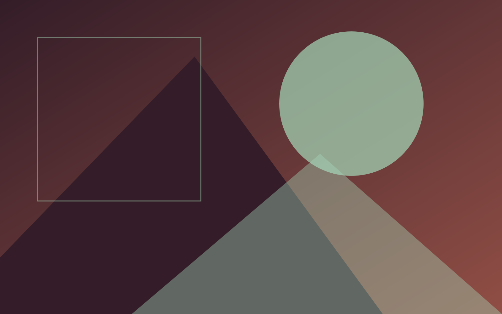

Architecture That Breathes
I'm Marlowe Fenn , a spatial designer shaping buildings that hold light, weather, and the people inside them. Quiet, sustainable, built to endure.
32+
Projects Completed
11
Design Awards

Latest Achievement
AIA Merit Award
Cascade Ridge House , 2025
0
Completed Projects
0
Design Awards
0
Countries
0
Years of Practice
Recent Work
Foundry Loft
Adaptive reuse of a 1920s machine shop into a light-flooded live-work space that keeps its iron bones on display.
View Project →Larch Retreat
An off-grid cabin sited between two firs , rainwater capture, a wood stove, and a single long window onto the canopy.
View Project →Commons Library
A neighborhood library reimagined as a porch for the whole block , open stacks, soft acoustics, and a reading garden.
View Project →Tideline House
An oceanfront residence raised on piloti to weather the storm surge, framing a long horizon of grey Pacific.
View Project →
About Me
Designing With Purpose & Precision
I'm an architect based in Portland, Oregon, with a fixation on spaces that quietly improve the lives lived inside them , and tread lightly on the land that holds them.
After an M.Arch from MIT and years with practices in New York and Kyoto, I opened my own studio in 2017 to chase work that honors craft, climate, and context over spectacle.
Every project is an argument made in concrete, glass, and timber: that good architecture should feel inevitable, generous, and built to outlast its trends.
- ✓Licensed Architect , Oregon, California, New York
- ✓LEED AP BD+C , Sustainable design specialist
- ✓Awards , AIA Merit Award, Architizer A+ Award
Design Focus
Custom Homes
Residential design tuned to how you actually live , from a tight urban infill to a rambling rural retreat.
- New Construction
- Renovations
- Additions
Sustainable Design
Climate-first architecture: passive strategy, low-carbon material, and a long honest life cycle.
- Passive Strategies
- LEED Projects
- Net-Zero Goals
Small-Scale Civic
Public and commercial spaces sized for their community , libraries, studios, shops, and reuse.
- Cultural Spaces
- Retail & Hospitality
- Adaptive Reuse
My Approach
01
Listen
Understanding your vision, lifestyle, and the grain of the site through long, careful conversation.
02
Explore
Working the idea through sketches, physical models, and digital studies until it earns its shape.
03
Refine
Iterating with your feedback into resolved drawings, details, and material specifications.
04
Build
Stewarding the project through construction with the oversight that protects the design intent.
My Approach
What Clients Say
"Marlowe turned our awkward hillside lot into a home that feels both modern and ancient. The attention to material and daylight was beyond anything we imagined."
★★★★★
"A genuinely collaborative process. Marlowe listened to how I work, then designed a space that balances industrial character with real warmth."
★★★★★
"Our off-grid cabin is a small masterpiece , comfortable through every season while barely touching the forest floor."
★★★★★
"The Commons Library has become the heart of our neighborhood. Marlowe knows how to make public space that feels like it belongs to everyone."
★★★★★
Let's Create Something Meaningful
I take on a limited number of projects each year. If you have something in mind for 2026–2027, I'd love to hear about it.